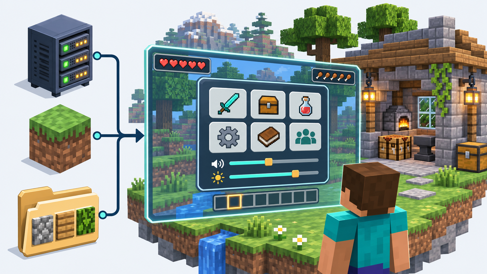
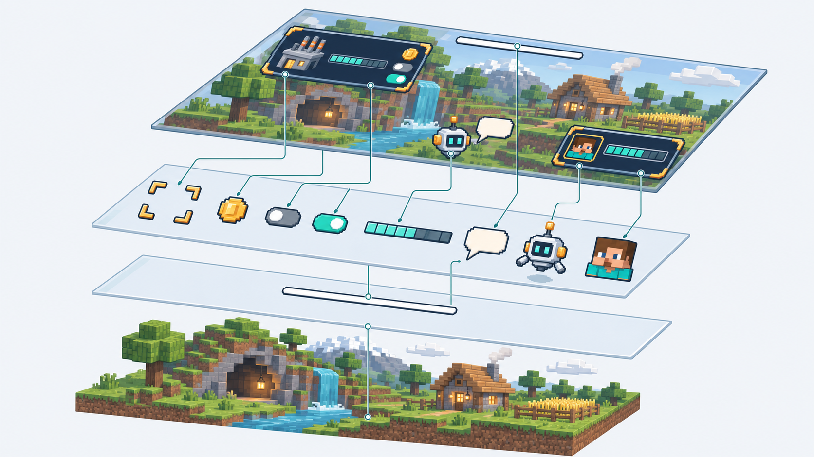

Las reglas
Conservan los datos de la partida y deciden qué cambia cuando actúas.
Un menú con botones, un panel de progreso o una barra que te acompaña mientras juegas pueden surgir de combinar piezas que Minecraft ya tiene.
Imagina un taller: eliges fabricar una pieza, el pedido avanza y su progreso aparece en una esquina. El juego muestra la interfaz, unas reglas deciden qué sucede y un paquete de recursos le da su aspecto.

Conservan los datos de la partida y deciden qué cambia cuando actúas.
Abre la pantalla, muestra el texto y ofrece controles que el jugador puede utilizar.
Transforman ese texto en iconos, marcos, paneles y otros elementos gráficos.
La demo utiliza el juego oficial. Sus reglas viven en un datapack: un conjunto de archivos que Minecraft ejecuta dentro de la partida. El aspecto se reúne en el paquete de recursos.
El datapack se carga y atiende a los jugadores mediante las funciones de Minecraft. El paquete aporta fuentes y texturas. No hay un plugin entre ambos.
El botón solicita una acción. Las reglas comprueban si se puede realizar, guardan el resultado y envían la pantalla actualizada. Así el pedido y lo que ves siguen contando la misma historia.
Pulsas «Fabricar pieza».
El pedido todavía admite una pieza.
El progreso pasa de dos a tres piezas.
El menú y el panel muestran tres piezas.
Un interruptor sigue la misma lógica. Ocultar un panel guarda una preferencia; el gráfico del interruptor representa ese estado.
Los botones ejecutan /trigger, disponible para un jugador sin OP cuando el datapack habilita ese objetivo. El mensaje del menú incluye una sesión y un código de acción. Las reglas validan la solicitud; el cliente no elige cuánto saldo recibe.
El interruptor de esta web explica el recorrido. La implementación dentro de Minecraft está en esos archivos.
Una fuente no tiene por qué contener solo letras. Puede asociar un carácter especial a una moneda, un botón o una imagen grande. Cuando Minecraft intenta escribir ese carácter, aparece el dibujo.
Los espacios también cuentan: unos avanzan y otros retroceden. Eso permite colocar texto encima de una imagen o juntar piezas para formar una barra de progreso.

Una fuente bitmap asigna caracteres privados a PNG. En la demo, el panel y las barras tienen medidas conocidas. Los avances negativos permiten superponer sus textos y terminar con una anchura fija de 160 píxeles.
Un menú se abre para elegir algo. Un HUD es el panel que sigue a la vista durante la partida: progreso, saldo o un aviso. Para mostrarlo, esta técnica aprovecha el texto de una barra que Minecraft ya sabe dibujar.
Un pequeño programa gráfico mueve el panel hasta el lugar previsto. El progreso sigue viniendo de las reglas de la partida.
El nombre de una bossbar transporta los componentes del HUD. El paquete hace transparentes sus sprites blancos y sustituye caracteres por gráficos. La variante anclada usa marcadores que reconoce el shader de texto de 26.3.
La demo empieza centrada. El anclaje en la esquina necesita comprobación visual con el cliente y sus escalas. El esquema de la web no sustituye esa prueba.
Separar estos trabajos permite cambiar la apariencia sin reescribir las reglas, y cambiar las reglas sin volver a dibujarlo todo.
Los scoreboards guardan los datos por jugador. Ajustes combina checkbox, selector y deslizador; el formulario envía un entero acotado por /trigger. El datapack valida cada campo antes de aplicarlo.
Las pruebas de comandos y formatos no demuestran el renderizado. El recorrido del cliente comprueba esa parte.
En nuestro ejemplo, fabricas piezas para completar un pedido. Al terminar puedes cobrarlo y empezar otro. Un panel acompaña el progreso y los ajustes permiten cambiar su visibilidad, posición y tamaño del pedido.
La demo está hecha para Minecraft vanilla: reúne un datapack con las reglas y un paquete de recursos con su aspecto. Sus archivos sirven de base para desarrollar otro proyecto.
Usa Minecraft Java 26.3. Instala el datapack en un mundo de pruebas y activa sus recursos; abre /trigger taller.open. En el servidor local, el lanzador prepara el JAR oficial y verifica su origen. Consulta las instrucciones antes de aceptar su EULA.
29 capítulos
Un menú abre una pantalla para elegir acciones. El HUD muestra información durante el juego. Un botón puede mostrar una explicación al pasar el ratón; un interruptor cambia una preferencia y actualiza lo que ves.
Taller implementa pedidos, cobro único, botones, tooltips, ajustes y HUD. Las mascotas y las transiciones complejas son ampliaciones posibles, no funciones ya incluidas.
En una partida individual las funciones también se ejecutan en el servidor interno del juego. En la demo, el código de las reglas está en logic/.
La demo está fijada a Minecraft Java 26.3, datapack 121.0 y recursos 97.1. El servidor oficial requiere Java 25. Las versiones y el origen verificable de su JAR están en versions.json.
Los formatos cambian entre versiones. No presentar este shader como compatible con cualquier cliente. Notas oficiales de 26.3.
demo/
datapack/data/taller/
function/player/ entrada y ciclo por jugador
function/ui/ composición y navegación
function/input/ validación de mensajes
function/logic/ pedidos y preferencias
function/hud/ bossbar y dibujo
function/test/ autopruebas nativas
dialog/ pantallas registradas
pack/assets/ fuentes, texturas y shader
tools/ generación, comprobación y arranque
No hay un plugin ni una API de servidor externa. Los archivos del proyecto son el punto de partida para implementar.
El cliente debe cargar las imágenes y las fuentes para dibujar el aspecto previsto. En un mundo individual, instala y activa taller-resources.zip. El servidor local preparado por dev.py sirve ese ZIP y lo requiere al conectar.
El datapack no detecta por sí solo el estado de la descarga. El servidor de Minecraft no se incluye en el descargable; se obtiene desde Mojang y se verifica su hash.
Una fuente bitmap relaciona un carácter con una imagen. Cuando Minecraft dibuja ese carácter, aparece el gráfico. Así se pueden combinar iconos, marcos y texto en una composición.
Referencias: hud.json, icons.json y generador de gráficos. Los caracteres privados elegidos son un contrato de la demo.
El avance de una letra determina dónde empieza la siguiente. Los espacios de anchura positiva y negativa permiten avanzar y retroceder; distintas líneas base sitúan elementos a diferentes alturas.
Taller termina su composición con 160 píxeles de avance. El panel aporta 161; los desplazamientos compensan los textos y la barra. Referencias: space.json, label.json, value.json y hud/apply.mcfunction.
Los diálogos son pantallas nativas de Minecraft. El datapack registra un acceso en el menú de pausa; /trigger taller.open solicita abrir el menú de Taller.
open.json define la entrada. ui/main.mcfunction prepara sus valores y ui/show.mcfunction envía el diálogo personalizado a ese jugador.
Los botones de la demo ejecutan trigger taller.action set <número>. El jugador solo puede utilizar un objetivo trigger habilitado para él. La función del datapack interpreta ese número y decide qué hacer.
El menú incluye una sesión y un código de acción en el mensaje. input/action.mcfunction comprueba sesión, caducidad, frecuencia y estado antes de llamar a las reglas. No se aceptan comandos arbitrarios.
Un botón de diálogo puede incluir tooltip. Minecraft muestra ese componente al pasar el ratón o enfocar el control; el datapack no necesita recibir continuamente la posición del cursor.
Los tooltips del taller se definen en ui/show.mcfunction. Las acciones esenciales conservan una etiqueta visible.
Un interruptor representa una preferencia. Al pulsar, cambia el valor guardado y se vuelve a dibujar el resultado. La imagen no guarda ese estado.
logic/toggle.mcfunction alterna taller.hud; hud/update.mcfunction muestra u oculta el panel del jugador.
Taller utiliza checkbox, selector y deslizador para visibilidad, posición y tamaño del pedido. tools/build.py genera las pantallas de dialog/settings/ con los valores actuales.
La acción minecraft:dynamic/run_command crea trigger taller.form set $(goal)$(hud)$(anchor). Las dos últimas cifras son banderas; las anteriores, el objetivo. El mensaje equivale a objetivo × 100 + visible × 10 + anclado.
logic/settings.mcfunction acepta únicamente objetivos de 1 a 12 y banderas de 0 a 1. La demo no persiste un campo de nombre libre. minecraft:dynamic/custom no llama por sí solo a funciones de datapack.
Cada menú nuevo renueva la sesión; una acción aceptada vuelve a mostrar el estado actual. Ajustes tiene su propio modo y tiempo de validez.
Referencias: ui/main.mcfunction, ui/settings.mcfunction y ui/close.mcfunction. Los diálogos no pausan la partida, de modo que el datapack puede responder mientras están abiertos.
El cliente solicita una acción; no decide cuánto saldo recibe. Se comparan los datos del jugador, se comprueba que el pedido está completo y se impide pagar de nuevo uno ya cobrado.
La validación de entrada está en input/. Las reglas reales están en logic/craft.mcfunction, claim.mcfunction y next.mcfunction.
Una barra de jefe tiene un nombre que Minecraft ya sabe mostrar durante el juego. Ese nombre puede contener la composición gráfica del panel.
Ilustración conceptual generada con IA, no captura del motor.
Taller asigna un identificador persistente a cada jugador y crea taller:player_<id>. hud/create.mcfunction prepara su barra; hud/apply.mcfunction actualiza su nombre y destinatario. No se comparte una sola barra mutable entre todos los jugadores.
El paquete vuelve transparentes white_background.png y white_progress.png, de 182 × 5 píxeles para esta versión. Así permanece el nombre compuesto, sin la barra blanca de fondo.
Archivos: sprites de bossbar. El reemplazo afecta también a otras barras blancas de estilo continuo; hay que reservar ese uso o coordinarlo.
El modo centrado usa el origen habitual de la bossbar. El modo anclado marca sus componentes con #FA02F0 y #FA02E0; el shader de texto reconoce esos valores y desplaza el dibujo.
Ese contrato depende de la anchura de 160 píxeles y del shader de 26.3. No es un estándar del juego ni el contrato RGB genérico de otras implementaciones. El código conserva la base de la versión objetivo y distingue también la sombra del texto.
La interfaz se mide en coordenadas lógicas de GUI. Debe comprobarse con varias escalas y tamaños de ventana; mover píxeles no cambia automáticamente las zonas de clic.
El HUD de esta demo es informativo. Los botones están en los diálogos, donde Minecraft ya gestiona cursor y foco. El recorrido de comprobación incluye el HUD anclado y el resto de textos del juego.
El datapack conserva piezas y objetivo por jugador. Selecciona uno de seis gráficos de barra a partir de piezas × 5 / objetivo y recompone el nombre cuando cambia el estado.
Hud/update.mcfunction elige la imagen y los desplazamientos. Make_assets.py genera las seis texturas. El saldo de la demo no modifica inventarios.
Una mascota dibujada en la interfaz puede combinar imágenes de fuente, texto y sonidos. Su comportamiento debe programarse por separado y requiere probar los anclajes y las preferencias.
Esta ampliación no está implementada en Taller. La ilustración de capas muestra posibilidades de la técnica, no funciones ya verificadas de la demo.
Un sistema puede utilizar títulos, barra de acción o chat para avisar de un cambio. Elige un canal que no estorbe a la partida y permite ocultar lo accesorio.
La demo conserva una entrada de chat clicable y un acceso desde el menú de pausa. Su implementación está en player/init.mcfunction y open.json.
Un título con un glifo y un shader puede formar parte de una transición. El efecto necesita sus propios tiempos y limpieza al interrumpirse.
Taller no implementa todavía transiciones complejas. No confundir la capacidad de la técnica con el alcance comprobado de este proyecto.
Progreso, saldo, objetivo y preferencias están en los scoreboards del mundo. Al volver a entrar, se conserva el identificador del jugador y se refresca su HUD.
Player/rejoin.mcfunction invalida la sesión anterior. El almacenamiento taller:ctx solo prepara temporalmente la siguiente operación, ejecutada de forma secuencial; no es el archivo persistente de un jugador.
Sustituye las reglas de pedido por las de tu proyecto y conserva la separación entre estado, validación y dibujo. Un dibujo de máquina no produce objetos por sí mismo.
La demo permite practicar ese recorrido sin tocar una economía real. Su carpeta logic/ es el punto de sustitución.
El ciclo por jugador atiende solicitudes y temporizadores. El HUD se recompone al entrar o cambiar sus datos; no se vuelve a enviar completo cada tick por rutina.
Player/tick.mcfunction administra la cola, el enfriamiento y la habilitación de triggers. Cada bossbar pertenece a su identificador de jugador.
/trigger taller.open sin OP y recorre las acciones.logic/ y comprueba su efecto.Instrucciones de Taller y mapa para agentes. No requiere Gradle ni compilar Java.
Las autopruebas son funciones reales del datapack:
function taller:test/run
data get storage taller:test report
El informe debe tener errors: 0. Test/run.mcfunction prueba límites del pedido, pago único, separación de datos y rangos de ajustes.
Validar JSON y comandos con el código del juego comprueba sus formatos, no la experiencia visual. Las capturas y pruebas del cliente deben realizarse aparte.
/trigger taller.open.python demo/tools/build.py y recargar el datapack o reiniciar el mundo de pruebas.No publicar registros con datos de jugadores. No utilizar mundos importantes para las primeras pruebas.
La lectura principal de la web explica la idea. Sus desplegables y este manual enlazan a una implementación vanilla concreta. Las ilustraciones no sustituyen las capturas ni la prueba dentro del cliente.